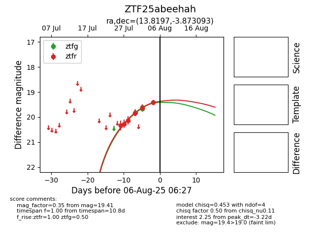

Target ZTF25abeehah at 2025-08-06 17:45, see:
FINK: fink-portal.org/ZTF25abeehah
Lasair: lasair-ztf.lsst.ac.uk/objects/ZTF25abeehah
ALeRCE: alerce.online/object/ZTF25abeehah
alt names
ZTF25abeehah (ztf,fink)
coordinates:
equatorial (ra, dec) = (13.8197,-3.87309)
galactic (l, b) = (125.3571,-66.72675)
photometry
last ztfg=19.67, ztfr=19.41
3 ztfg, 6 ztfr detections
